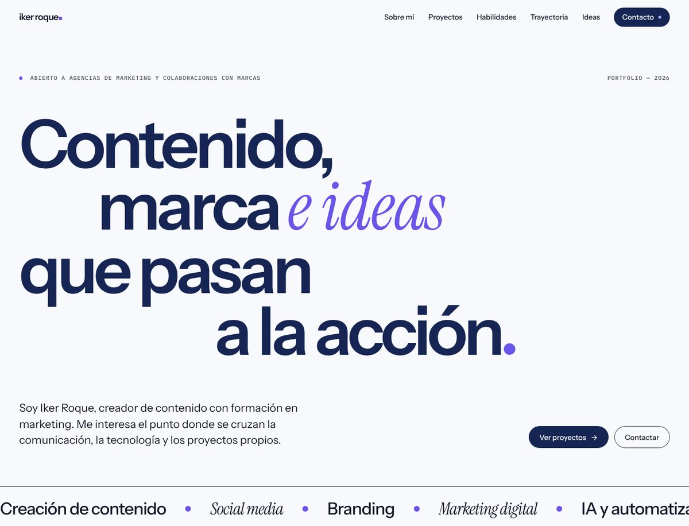
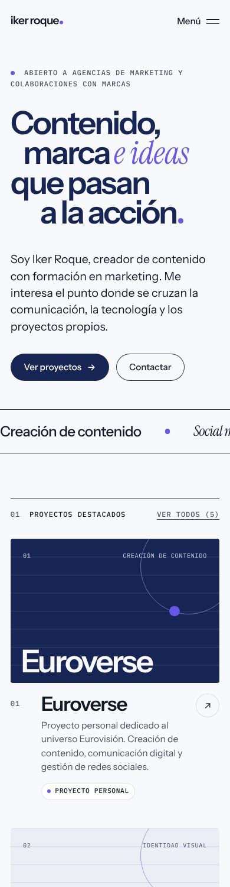
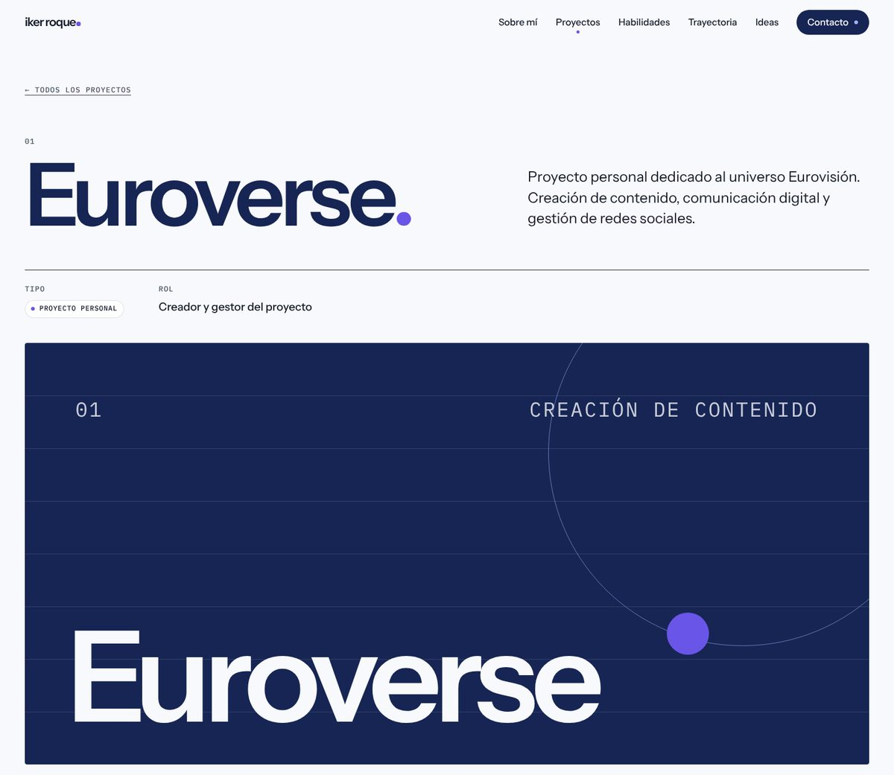
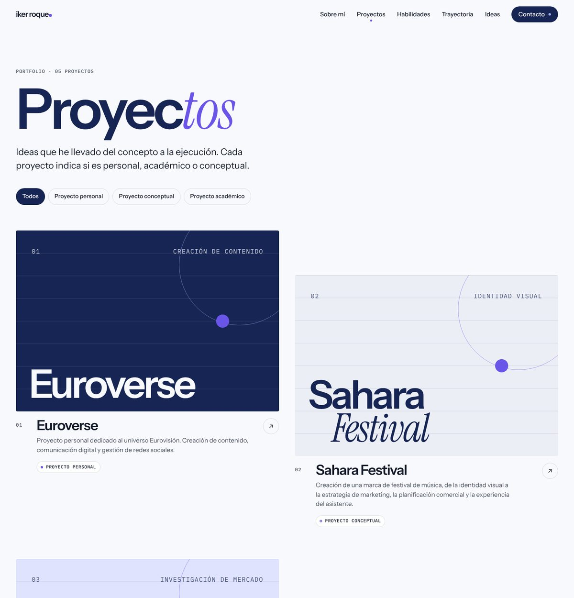
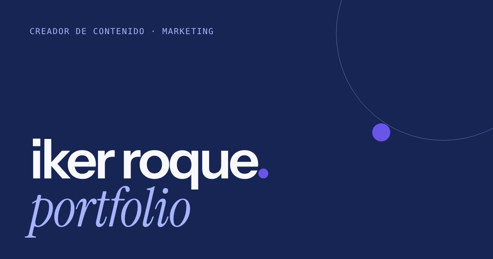

<title>Identidad Iker Roque</title>
<meta name="claude:viewport-fit-sides" content="cover">
<link rel="preconnect" href="https://fonts.googleapis.com">
<link rel="preconnect" href="https://fonts.gstatic.com" crossorigin>
<link rel="stylesheet" href="https://fonts.googleapis.com/css2?family=Instrument+Sans:wght@400..700&family=Instrument+Serif:ital@1&family=IBM+Plex+Mono:wght@400;500&display=swap">
<style>
/* Layout: manual editorial en una columna ancha, secciones numeradas con regla superior y bandas azules para los momentos clave. Tema único (claro) por decisión de marca. */
:root {
  --navy: #172554;
  --violet: #6955e8;
  --lavender: #a5b4fc;
  --paper: #f8f9fc;
  --ink: #111827;
  --muted: #4b5563;
  --line: rgb(17 24 39 / 0.12);
  --line-strong: rgb(17 24 39 / 0.85);
  --white: #ffffff;
  --violet-soft: #ecebfd;
  --sans: 'Instrument Sans', ui-sans-serif, system-ui, sans-serif;
  --serif: 'Instrument Serif', Georgia, serif;
  --mono: 'IBM Plex Mono', ui-monospace, monospace;
  --gutter: clamp(16px, 4vw, 48px);
  color-scheme: light;
}
* { box-sizing: border-box; }
body { background: var(--paper); color: var(--ink); font: 16px/1.6 var(--sans); -webkit-font-smoothing: antialiased; }
h1, h2, h3 { margin: 0; font-weight: 600; letter-spacing: -0.04em; line-height: 1; text-wrap: balance; }
p { margin: 0; text-wrap: pretty; }
img { max-width: 100%; display: block; }
.wrap { max-width: 1200px; margin: 0 auto; padding-left: max(var(--gutter), env(safe-area-inset-left, 0px)); padding-right: max(var(--gutter), env(safe-area-inset-right, 0px)); }
.label { font: 500 11.5px/1.4 var(--mono); letter-spacing: 0.08em; text-transform: uppercase; color: var(--muted); }
.serif { font-family: var(--serif); font-style: italic; font-weight: 400; letter-spacing: -0.01em; }
.v { color: var(--violet); }
.dot { display: inline-block; width: 0.5em; height: 0.5em; border-radius: 50%; background: var(--violet); }

/* Portada */
.hero { background: var(--navy); color: var(--paper); margin-top: calc(-1 * env(safe-area-inset-top, 0px)); padding-top: env(safe-area-inset-top, 0px); position: relative; overflow: hidden; }
.hero .wrap { padding-block: clamp(48px, 8vw, 96px) clamp(40px, 6vw, 72px); display: grid; gap: clamp(40px, 8vw, 96px); position: relative; }
.hero .label { color: var(--lavender); }
.hero-top { display: flex; justify-content: space-between; gap: 16px; flex-wrap: wrap; }
.hero h1 { font-size: clamp(56px, 13vw, 168px); letter-spacing: -0.06em; line-height: 0.88; }
.hero h1 .serif { color: var(--lavender); display: block; padding-left: 0.5em; }
.hero h1 .d { display: inline-block; width: 0.16em; height: 0.16em; border-radius: 50%; background: var(--violet); margin-left: 0.03em; }
.hero p.lead { max-width: 44ch; font-size: clamp(17px, 1.6vw, 20px); color: rgb(248 249 252 / 0.82); }
.ring { position: absolute; width: min(60vw, 640px); aspect-ratio: 1; border: 1px solid var(--lavender); border-radius: 50%; opacity: 0.45; right: -14vw; top: -18vw; }

/* Secciones */
section.s { padding-block: clamp(64px, 10vw, 128px) 0; }
.head { display: grid; grid-template-columns: 64px 1fr; gap: 12px 24px; border-top: 1px solid var(--line-strong); padding-top: 16px; margin-bottom: clamp(32px, 5vw, 56px); }
.head h2 { font-size: clamp(36px, 5.5vw, 68px); grid-column: 2; }
.head p { grid-column: 2; max-width: 60ch; color: var(--muted); font-size: 17px; }
.cols { display: grid; grid-template-columns: repeat(auto-fit, minmax(min(100%, 280px), 1fr)); gap: 24px; }

/* Esencia */
.adj { display: grid; grid-template-columns: repeat(3, 1fr); gap: 24px; }
.adj div { border-top: 1px solid var(--line); padding-top: 16px; display: grid; gap: 10px; }
.adj h3 { font-size: clamp(28px, 3.2vw, 40px); color: var(--navy); }
.adj p { color: var(--muted); }
.quote { margin-top: clamp(40px, 6vw, 72px); font-size: clamp(28px, 4vw, 52px); letter-spacing: -0.04em; line-height: 1.1; color: var(--navy); max-width: 22ch; font-weight: 500; }

/* Logo */
.logo-grid { display: grid; grid-template-columns: 2fr 1fr; gap: 24px; }
.tile { border-radius: 4px; min-height: 260px; display: grid; place-items: center; position: relative; padding: 32px; }
.tile .label { position: absolute; left: 16px; bottom: 14px; }
.t-paper { background: var(--white); box-shadow: inset 0 0 0 1px var(--line); }
.t-navy { background: var(--navy); color: var(--paper); }
.t-navy .label { color: var(--lavender); }
.wordmark { font-weight: 600; letter-spacing: -0.05em; line-height: 1; font-size: clamp(44px, 8vw, 96px); display: inline-flex; align-items: baseline; }
.wordmark i { width: 0.3em; height: 0.3em; border-radius: 50%; background: var(--violet); margin-left: 0.06em; }
.mark { width: 128px; height: 128px; border-radius: 28px; background: var(--navy); display: grid; place-items: center; }
.mark span { color: var(--paper); font: 600 68px/1 var(--sans); letter-spacing: -0.07em; display: inline-flex; align-items: baseline; }
.mark i { width: 14px; height: 14px; border-radius: 50%; background: var(--violet); margin-left: 6px; }
.t-navy .mark { background: var(--paper); }
.t-navy .mark span { color: var(--navy); }
.rules { display: grid; grid-template-columns: repeat(auto-fit, minmax(min(100%, 240px), 1fr)); gap: 24px; margin-top: 24px; }
.rule { display: grid; gap: 8px; border-top: 1px solid var(--line); padding-top: 14px; }
.rule b { font-weight: 600; }
.rule.no b::before { content: '✕ '; color: var(--violet); }
.rule.yes b::before { content: '✓ '; color: var(--navy); }
.rule p { color: var(--muted); font-size: 15px; }

/* Color */
.swatches { display: grid; grid-template-columns: 3fr 2fr 1fr 1fr 1fr; gap: 8px; }
.sw { min-height: 260px; border-radius: 4px; padding: 16px; display: flex; flex-direction: column; justify-content: space-between; gap: 12px; }
.sw b { font-size: 20px; letter-spacing: -0.02em; font-weight: 600; }
.sw .hex { font: 500 12px var(--mono); letter-spacing: 0.04em; }
.sw small { font-size: 13px; line-height: 1.35; opacity: 0.85; }
.c-navy { background: var(--navy); color: var(--paper); }
.c-paper { background: var(--paper); box-shadow: inset 0 0 0 1px var(--line); color: var(--ink); }
.c-ink { background: var(--ink); color: var(--paper); }
.c-violet { background: var(--violet); color: var(--white); }
.c-lav { background: var(--lavender); color: var(--navy); }
.ratio { margin-top: 32px; display: grid; gap: 10px; }
.bar { display: flex; height: 28px; border-radius: 4px; overflow: hidden; box-shadow: inset 0 0 0 1px var(--line); }
.bar span { display: block; height: 100%; }
.legend { display: flex; flex-wrap: wrap; gap: 8px 20px; font-size: 14px; color: var(--muted); }
.legend b { color: var(--ink); font-weight: 600; }
.pairs { display: grid; grid-template-columns: repeat(auto-fit, minmax(min(100%, 220px), 1fr)); gap: 12px; margin-top: 32px; }
.pair { border-radius: 4px; padding: 20px; display: grid; gap: 4px; }
.pair span { font-size: 26px; font-weight: 600; letter-spacing: -0.03em; }
.pair small { font: 500 11.5px var(--mono); letter-spacing: 0.04em; opacity: 0.9; }

/* Tipografía */
.type-list { display: grid; gap: 0; }
.type-row { display: grid; grid-template-columns: 220px 1fr; gap: 24px; padding-block: 28px; border-top: 1px solid var(--line); align-items: center; }
.type-row .meta { display: grid; gap: 6px; }
.type-row .meta b { font-size: 18px; font-weight: 600; }
.type-row .meta small { color: var(--muted); font-size: 14px; }
.spec-sans { font-size: clamp(48px, 8vw, 104px); font-weight: 600; letter-spacing: -0.055em; line-height: 0.95; color: var(--navy); }
.spec-serif { font-family: var(--serif); font-style: italic; font-size: clamp(48px, 8vw, 104px); line-height: 1; color: var(--violet); }
.spec-mono { font: 500 clamp(14px, 1.6vw, 18px) var(--mono); letter-spacing: 0.08em; text-transform: uppercase; color: var(--ink); }
.combo { margin-top: 32px; background: var(--white); box-shadow: inset 0 0 0 1px var(--line); border-radius: 4px; padding: clamp(24px, 5vw, 56px); display: grid; gap: 20px; }
.combo h3 { font-size: clamp(40px, 7vw, 88px); letter-spacing: -0.055em; line-height: 0.92; color: var(--navy); }
.combo p { max-width: 46ch; font-size: 18px; }

/* El punto */
.punto { background: var(--navy); color: var(--paper); margin-top: clamp(64px, 10vw, 128px); }
.punto .wrap { padding-block: clamp(64px, 9vw, 112px); display: grid; grid-template-columns: 1fr 1fr; gap: clamp(32px, 6vw, 80px); align-items: center; }
.punto .label { color: var(--lavender); }
.punto h2 { font-size: clamp(40px, 6vw, 80px); margin-block: 16px 20px; }
.punto h2 .serif { color: var(--lavender); }
.punto p { color: rgb(248 249 252 / 0.8); max-width: 46ch; }
.uses { display: grid; gap: 0; }
.use { display: grid; grid-template-columns: 56px 1fr; gap: 16px; align-items: center; padding-block: 16px; border-top: 1px solid rgb(255 255 255 / 0.16); }
.use .ex { display: grid; place-items: center; height: 40px; }
.use .ex .dot { width: 12px; height: 12px; }
.ring-ex { width: 12px; height: 12px; border-radius: 50%; box-shadow: inset 0 0 0 2px var(--violet); }
.pulse-ex { width: 10px; height: 10px; border-radius: 50%; background: var(--violet); box-shadow: 0 0 0 6px rgb(105 85 232 / 0.3); }
.use b { font-weight: 600; display: block; }
.use small { color: rgb(248 249 252 / 0.7); font-size: 14px; }

/* Voz */
.voice { display: grid; grid-template-columns: 1fr 1fr; gap: 24px; }
.voice > div { display: grid; gap: 12px; align-content: start; }
.say { padding: 16px 18px; border-radius: 4px; font-size: 17px; line-height: 1.45; }
.say.yes { background: var(--white); box-shadow: inset 0 0 0 1px var(--line); }
.say.no { background: transparent; box-shadow: inset 0 0 0 1px var(--line); color: var(--muted); text-decoration: line-through; text-decoration-color: rgb(105 85 232 / 0.6); }
.principles { display: grid; grid-template-columns: repeat(auto-fit, minmax(min(100%, 240px), 1fr)); gap: 24px; margin-bottom: 40px; }
.principles div { border-top: 1px solid var(--line); padding-top: 14px; display: grid; gap: 6px; }
.principles b { font-size: 20px; letter-spacing: -0.02em; font-weight: 600; color: var(--navy); }
.principles p { color: var(--muted); font-size: 15px; }

/* Componentes */
.comp { display: grid; grid-template-columns: repeat(auto-fit, minmax(min(100%, 300px), 1fr)); gap: 24px; }
.comp > div { background: var(--white); box-shadow: inset 0 0 0 1px var(--line); border-radius: 4px; padding: 24px; display: grid; gap: 16px; align-content: start; }
.row { display: flex; flex-wrap: wrap; gap: 10px; align-items: center; }
.btn { display: inline-flex; align-items: center; gap: 8px; padding: 13px 20px; border-radius: 999px; font: 500 15px/1 var(--sans); border: 0; cursor: pointer; transition: background-color .3s, color .3s, box-shadow .3s; }
.btn-p { background: var(--navy); color: var(--white); }
.btn-p:hover { background: var(--violet); }
.btn-g { background: transparent; color: var(--ink); box-shadow: inset 0 0 0 1px var(--line-strong); }
.btn-g:hover { color: var(--violet); box-shadow: inset 0 0 0 1px var(--violet); }
.btn:focus-visible { outline: 2px solid var(--violet); outline-offset: 3px; }
.tag { display: inline-flex; align-items: center; gap: 7px; font: 500 11px var(--mono); letter-spacing: 0.06em; text-transform: uppercase; padding: 6px 10px; border-radius: 999px; background: var(--white); box-shadow: inset 0 0 0 1px var(--line); }
.tag i { width: 6px; height: 6px; border-radius: 50%; background: var(--violet); }
.tag.ac i { background: var(--navy); }
.tag.co i { background: transparent; box-shadow: inset 0 0 0 1.5px var(--violet); }
.tag.pr i { background: var(--lavender); }
.todo { background: repeating-linear-gradient(-45deg, var(--violet-soft) 0 6px, #f4f3fe 6px 12px); color: var(--violet); font-style: italic; padding: 0 4px; border-radius: 2px; }
.comp small { color: var(--muted); font-size: 14px; }

/* Aplicaciones */
.shots { display: grid; grid-template-columns: 2fr 1fr; gap: 24px; align-items: start; }
.shots figure { margin: 0; display: grid; gap: 10px; min-width: 0; }
.shots img { border-radius: 4px; box-shadow: 0 0 0 1px var(--line), 0 24px 48px -24px rgb(23 37 84 / 0.35); }
.shots .stack { display: grid; gap: 24px; }
.apps { display: grid; grid-template-columns: 2fr 1fr; gap: 24px; margin-top: 24px; align-items: start; }
.avatar { display: grid; gap: 10px; }
.avatar .circle { width: 100%; max-width: 220px; aspect-ratio: 1; border-radius: 50%; background: var(--navy); display: grid; place-items: center; }
.avatar .circle span { color: var(--paper); font: 600 clamp(56px, 8vw, 96px)/1 var(--sans); letter-spacing: -0.07em; display: inline-flex; align-items: baseline; }
.avatar .circle i { width: 0.18em; height: 0.18em; border-radius: 50%; background: var(--violet); margin-left: 0.06em; }

/* Cierre */
.next { margin-top: clamp(64px, 10vw, 128px); border-top: 1px solid var(--line-strong); padding-block: 24px clamp(64px, 8vw, 96px); display: grid; grid-template-columns: 64px 1fr; gap: 12px 24px; }
.next h2 { font-size: clamp(36px, 5.5vw, 68px); grid-column: 2; }
.next ol { grid-column: 2; margin: 16px 0 0; padding: 0; list-style: none; display: grid; gap: 0; max-width: 760px; }
.next li { display: grid; grid-template-columns: 36px 1fr; gap: 12px; padding-block: 14px; border-top: 1px solid var(--line); font-size: 17px; }
.next li .label { color: var(--violet); padding-top: 3px; }
footer { background: var(--navy); color: var(--lavender); }
footer .wrap { padding-block: 28px; display: flex; justify-content: space-between; flex-wrap: wrap; gap: 12px; }
footer .wordmark { font-size: 22px; color: var(--paper); }

@media (max-width: 760px) {
  .head, .next { grid-template-columns: 1fr; }
  .head h2, .head p, .next h2, .next ol { grid-column: 1; }
  .adj, .logo-grid, .voice, .punto .wrap, .shots, .apps { grid-template-columns: 1fr; }
  .swatches { grid-template-columns: 1fr 1fr; }
  .swatches .c-navy { grid-column: 1 / -1; }
  .sw { min-height: 150px; }
  .type-row { grid-template-columns: 1fr; gap: 12px; }
}
@media (prefers-reduced-motion: reduce) { * { transition: none !important; } }
</style>

<header class="hero">
  <div class="ring" aria-hidden="true"></div>
  <div class="wrap">
    <div class="hero-top">
      <span class="label">Manual de identidad · v1</span>
      <span class="label">Portfolio web · Noviembre 2026</span>
    </div>
    <h1>iker roque<span class="d" aria-hidden="true"></span><span class="serif">identidad visual</span></h1>
    <p class="lead">El sistema visual de la marca personal de Iker Roque: creador de contenido con formación en marketing. Azul y blanco construyen la identidad; el violeta es el punto que la activa.</p>
  </div>
</header>

<main>
  <!-- ESENCIA -->
  <section class="s wrap">
    <div class="head">
      <span class="label">01</span>
      <h2>Esencia</h2>
      <p>Una marca personal, no una agencia. Joven, curiosa y con iniciativa. Destaca por sus proyectos y por su capacidad para llevar las ideas a cabo, sin aparentar más de lo que es.</p>
    </div>
    <div class="adj">
      <div><span class="label">Forma</span><h3>Minimalista</h3><p>Limpia y ordenada. Nada que no aporte. El espacio en blanco es parte del diseño.</p></div>
      <div><span class="label">Carácter</span><h3><span class="serif">Creativa</span></h3><p>Personalidad en los detalles: una palabra en cursiva, el punto violeta, una composición asimétrica.</p></div>
      <div><span class="label">Composición</span><h3>Editorial</h3><p>Como una revista digital de diseño: tipografía grande, jerarquía clara e imágenes protagonistas.</p></div>
    </div>
    <p class="quote">Contenido, marca <span class="serif v">e ideas</span> que pasan a la acción.</p>
  </section>

  <!-- LOGO -->
  <section class="s wrap">
    <div class="head">
      <span class="label">02</span>
      <h2>Logotipo</h2>
      <p>Un logotipo tipográfico en minúsculas, cercano y directo, cerrado con el punto violeta. El monograma «ir.» funciona como favicon, avatar y sello.</p>
    </div>
    <div class="logo-grid">
      <div class="tile t-paper"><span class="wordmark">iker roque<i></i></span><span class="label">Logotipo principal</span></div>
      <div class="tile t-paper"><div class="mark"><span>ir<i></i></span></div><span class="label">Monograma</span></div>
      <div class="tile t-navy"><span class="wordmark">iker roque<i></i></span><span class="label">Sobre azul profundo</span></div>
      <div class="tile t-navy"><div class="mark"><span>ir<i></i></span></div><span class="label">Monograma invertido</span></div>
    </div>
    <div class="rules">
      <div class="rule yes"><b>Siempre en minúsculas</b><p>Instrument Sans Semibold con espaciado ajustado.</p></div>
      <div class="rule yes"><b>El punto siempre violeta</b><p>Sobre fondos violetas, el punto pasa a lavanda.</p></div>
      <div class="rule no"><b>No usar degradados en el logo</b><p>Ni sombras, contornos ni deformaciones.</p></div>
      <div class="rule no"><b>No cambiar el punto por otro símbolo</b><p>Es el único elemento gráfico fijo de la marca.</p></div>
    </div>
  </section>

  <!-- COLOR -->
  <section class="s wrap">
    <div class="head">
      <span class="label">03</span>
      <h2>Color</h2>
      <p>El azul y el blanco construyen la identidad. El violeta aparece en detalles, elementos interactivos y zonas destacadas. Los degradados se reservan para casos puntuales, nunca como fondo general.</p>
    </div>
    <div class="swatches">
      <div class="sw c-paper"><b>Blanco frío</b><div><div class="hex">#F8F9FC</div><small>Fondos y espacios limpios</small></div></div>
      <div class="sw c-navy"><b>Azul profundo</b><div><div class="hex">#172554</div><small>Color principal: titulares, bloques, botones</small></div></div>
      <div class="sw c-ink"><b>Azul casi negro</b><div><div class="hex">#111827</div><small>Texto</small></div></div>
      <div class="sw c-violet"><b>Violeta</b><div><div class="hex">#6955E8</div><small>Acento: el punto, hover, enlaces</small></div></div>
      <div class="sw c-lav"><b>Lavanda</b><div><div class="hex">#A5B4FC</div><small>Secundario, sobre azul</small></div></div>
    </div>
    <div class="ratio">
      <span class="label">Proporción de uso aproximada</span>
      <div class="bar" aria-hidden="true"><span style="width:60%;background:var(--paper)"></span><span style="width:25%;background:var(--navy)"></span><span style="width:8%;background:var(--ink)"></span><span style="width:5%;background:var(--violet)"></span><span style="width:2%;background:var(--lavender)"></span></div>
      <div class="legend"><span><b>60%</b> blanco frío</span><span><b>25%</b> azul profundo</span><span><b>8%</b> casi negro</span><span><b>5%</b> violeta</span><span><b>2%</b> lavanda</span></div>
    </div>
    <div class="pairs">
      <div class="pair c-paper"><span style="color:var(--navy)">Azul sobre blanco</span><small>Contraste 14,5 : 1 · titulares</small></div>
      <div class="pair c-paper"><span style="color:var(--violet)">Violeta sobre blanco</span><small>Contraste 4,9 : 1 · enlaces y acentos</small></div>
      <div class="pair c-navy"><span style="color:var(--lavender)">Lavanda sobre azul</span><small>Contraste 7,5 : 1 · destacados</small></div>
      <div class="pair c-navy"><span>Blanco sobre azul</span><small>Contraste 14,5 : 1 · bandas</small></div>
    </div>
  </section>

  <!-- TIPOGRAFÍA -->
  <section class="s wrap">
    <div class="head">
      <span class="label">04</span>
      <h2>Tipografía</h2>
      <p>Tres familias gratuitas con tres papeles distintos. La sans grande y apretada es la voz principal; la serif cursiva pone el acento; la mono ordena los datos.</p>
    </div>
    <div class="type-list">
      <div class="type-row"><div class="meta"><span class="label">Principal</span><b>Instrument Sans</b><small>Titulares y texto. Semibold, tracking −4 a −6 %.</small></div><div class="spec-sans">Aa Proyectos</div></div>
      <div class="type-row"><div class="meta"><span class="label">Acento</span><b>Instrument Serif Italic</b><small>Una o dos palabras por titular. Nunca párrafos.</small></div><div class="spec-serif">e ideas</div></div>
      <div class="type-row"><div class="meta"><span class="label">Utilidad</span><b>IBM Plex Mono</b><small>Etiquetas, numeración, fechas, metadatos. Mayúsculas.</small></div><div class="spec-mono">01 · Proyecto conceptual · 2026</div></div>
    </div>
    <div class="combo">
      <span class="label">Combinación en titular</span>
      <h3>No me quedo en la idea: <span class="serif v">la llevo a cabo.</span></h3>
      <p>El texto de lectura va en Instrument Sans regular, de 16 a 18 px, con interlineado amplio y líneas de unos 65 caracteres.</p>
    </div>
  </section>

  <!-- EL PUNTO -->
  <section class="punto">
    <div class="wrap">
      <div>
        <span class="label">05 · Elemento gráfico</span>
        <h2>El <span class="serif">punto</span></h2>
        <p>El punto del logotipo es el símbolo de la marca: una idea que se cierra y se pone en marcha. Aparece en toda la web con un uso concreto, nunca como adorno repetido.</p>
      </div>
      <div class="uses">
        <div class="use"><div class="ex"><span class="dot"></span></div><div><b>Cierre de titulares</b><small>Como punto final de los titulares grandes.</small></div></div>
        <div class="use"><div class="ex"><span class="pulse-ex"></span></div><div><b>Estado activo</b><small>Disponibilidad, página actual en el menú.</small></div></div>
        <div class="use"><div class="ex"><span class="ring-ex"></span></div><div><b>Tipo de proyecto</b><small>Relleno, contorno o color distinto según el tipo.</small></div></div>
        <div class="use"><div class="ex"><span class="dot" style="width:8px;height:8px"></span></div><div><b>Viñetas y listas</b><small>Sustituye a guiones y viñetas.</small></div></div>
      </div>
    </div>
  </section>

  <!-- VOZ -->
  <section class="s wrap">
    <div class="head">
      <span class="label">06</span>
      <h2>Tono de voz</h2>
      <p>Cercano, claro y con seguridad, pero sin exagerar. Habla en primera persona y enseña hechos en lugar de adjetivos.</p>
    </div>
    <div class="principles">
      <div><b>Honesto</b><p>Sin clientes, cifras ni resultados que no existan. Cada proyecto dice si es personal, académico o conceptual.</p></div>
      <div><b>Directo</b><p>Frases cortas. Verbos de acción: creo, lanzo, construyo, aprendo.</p></div>
      <div><b>Curioso</b><p>Muestra interés por entender, probar y mejorar.</p></div>
    </div>
    <div class="voice">
      <div><span class="label">Así sí</span>
        <p class="say yes">Lanzo y gestiono mis propias ideas, como Euroverse, para poner a prueba lo que sé.</p>
        <p class="say yes">Proyecto académico: investigación de mercado, propuesta de valor y estrategia comercial.</p>
      </div>
      <div><span class="label">Así no</span>
        <p class="say no">Experto en soluciones 360º de marketing disruptivo potenciadas por IA.</p>
        <p class="say no">+300 % de engagement para marcas líderes.</p>
      </div>
    </div>
  </section>

  <!-- COMPONENTES -->
  <section class="s wrap">
    <div class="head">
      <span class="label">07</span>
      <h2>Componentes</h2>
      <p>Las piezas reutilizables de la web. Pasa el cursor por los botones para ver la interacción en violeta.</p>
    </div>
    <div class="comp">
      <div><span class="label">Botones</span>
        <div class="row"><button class="btn btn-p" type="button">Ver proyectos →</button><button class="btn btn-g" type="button">Contactar</button></div>
        <small>Principal en azul, cambia a violeta al pasar el cursor. Secundario con contorno.</small>
      </div>
      <div><span class="label">Etiquetas de proyecto</span>
        <div class="row"><span class="tag"><i></i>Personal</span><span class="tag ac"><i></i>Académico</span><span class="tag co"><i></i>Conceptual</span><span class="tag pr"><i></i>Profesional</span></div>
        <small>Indican siempre la naturaleza del proyecto.</small>
      </div>
      <div><span class="label">Texto pendiente</span>
        <p style="font-size:17px">Estudié <span class="todo">Nombre de tu titulación</span> en <span class="todo">Centro</span>.</p>
        <small>Lo que aún no está confirmado aparece así, para no publicar nada inventado.</small>
      </div>
    </div>
  </section>

  <!-- APLICACIONES -->
  <section class="s wrap">
    <div class="head">
      <span class="label">08</span>
      <h2>Aplicaciones</h2>
      <p>La identidad aplicada al portfolio web y a las piezas que lo acompañan al compartirlo en redes.</p>
    </div>
    <div class="shots">
      <figure><figcaption class="label">Inicio · escritorio</figcaption></figure>
      <figure><figcaption class="label">Inicio · móvil</figcaption></figure>
    </div>
    <div class="shots" style="margin-top:24px">
      <figure><figcaption class="label">Página de proyecto</figcaption></figure>
      <figure><figcaption class="label">Listado con filtros</figcaption></figure>
    </div>
    <div class="apps">
      <figure style="margin:0;display:grid;gap:10px"><figcaption class="label">Imagen al compartir el enlace (1200 × 630)</figcaption></figure>
      <div class="avatar"><div class="circle"><span>ir<i></i></span></div><span class="label">Avatar para redes</span></div>
    </div>
  </section>

  <!-- SIGUIENTES PASOS -->
  <section class="wrap">
    <div class="next">
      <span class="label">09</span>
      <h2>Siguientes <span class="serif v">pasos</span></h2>
      <ol>
        <li><span class="label">01</span><span>Completar los textos marcados como pendientes: historia, formación, experiencia e idiomas.</span></li>
        <li><span class="label">02</span><span>Añadir foto de perfil, portadas reales de los proyectos y enlaces a LinkedIn y redes.</span></li>
        <li><span class="label">03</span><span>Confirmar el tipo y estado de cada proyecto, y las herramientas usadas.</span></li>
        <li><span class="label">04</span><span>Publicar en Cloudflare Pages, comprar el dominio y activar el email profesional.</span></li>
        <li><span class="label">05</span><span>Piezas derivadas: firma de email, plantilla de CV en PDF y plantillas para redes.</span></li>
      </ol>
    </div>
  </section>
</main>

<footer>
  <div class="wrap">
    <span class="wordmark">iker roque<i></i></span>
    <span class="label" style="color:var(--lavender)">Manual de identidad · v1 · 2026</span>
  </div>
</footer>
